Home
The Bookstore
TODO: A line about the bookstore: what it stocks, and where and when the books can be bought.
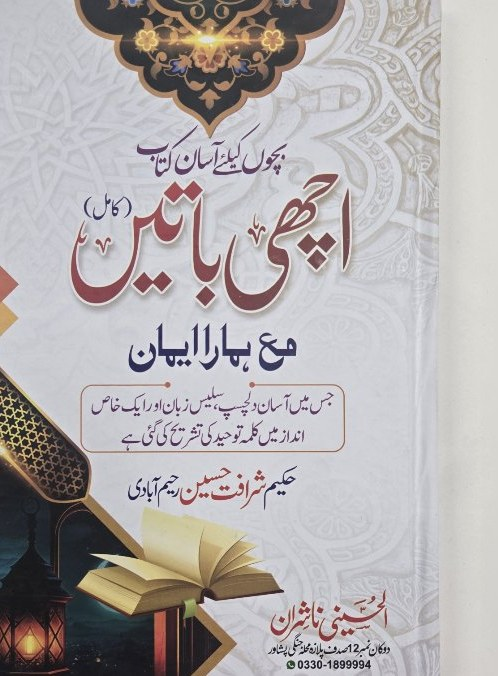
Achchhī BāteṉUrdu · I$6.00 Urdū kā Āsān QāʿidaUrdu · I$1.00
Urdū kā Āsān QāʿidaUrdu · I$1.00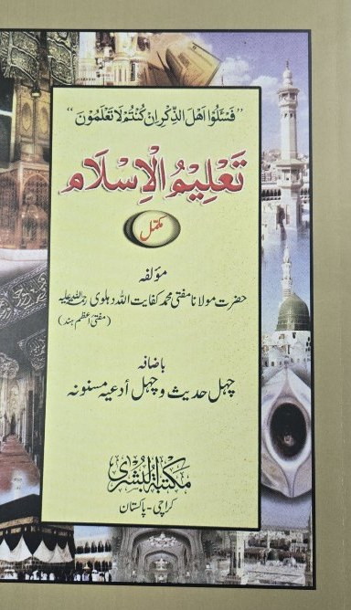
Taʿlīm al-IslāmIslamic Studies · I$6.00 Durūs al-Lugha al-ʿArabiyyaArabic · I$25.00
Durūs al-Lugha al-ʿArabiyyaArabic · I$25.00![](data:image/svg+xml,%3Csvg%20xmlns%3D%22http%3A%2F%2Fwww.w3.org%2F2000%2Fsvg%22%20viewBox%3D%220%200%20300%20400%22%20width%3D%22300%22%20height%3D%22400%22%3E%3Cdefs%3E%3ClinearGradient%20id%3D%22gv%22%20x1%3D%220%22%20y1%3D%220%22%20x2%3D%220%22%20y2%3D%221%22%3E%3Cstop%20offset%3D%220%22%20stop-color%3D%22%23f7e2a2%22%2F%3E%3Cstop%20offset%3D%22.45%22%20stop-color%3D%22%23d9aa48%22%2F%3E%3Cstop%20offset%3D%22.8%22%20stop-color%3D%22%23a9792a%22%2F%3E%3Cstop%20offset%3D%221%22%20stop-color%3D%22%23e8c778%22%2F%3E%3C%2FlinearGradient%3E%3C%2Fdefs%3E%3Cfilter%20id%3D%22n%22%20x%3D%220%22%20y%3D%220%22%20width%3D%22100%25%22%20height%3D%22100%25%22%3E%3CfeTurbulence%20type%3D%22fractalNoise%22%20baseFrequency%3D%220.9%22%20numOctaves%3D%223%22%20stitchTiles%3D%22stitch%22%2F%3E%3CfeColorMatrix%20values%3D%220%200%200%200%200%20%200%200%200%200%200%20%200%200%200%200%200%20%200.5%200%200%200%20-0.22%22%2F%3E%3C%2Ffilter%3E%3ClinearGradient%20id%3D%22l%22%20x1%3D%220%22%20y1%3D%220%22%20x2%3D%221%22%20y2%3D%220%22%3E%3Cstop%20offset%3D%220%22%20stop-opacity%3D%220.4%22%2F%3E%3Cstop%20offset%3D%220.16%22%20stop-opacity%3D%220.04%22%2F%3E%3Cstop%20offset%3D%220.5%22%20stop-color%3D%22%23fff%22%20stop-opacity%3D%220.07%22%2F%3E%3Cstop%20offset%3D%221%22%20stop-opacity%3D%220.28%22%2F%3E%3C%2FlinearGradient%3E%3Cpattern%20id%3D%22b%22%20width%3D%228%22%20height%3D%2214%22%20patternUnits%3D%22userSpaceOnUse%22%20y%3D%2212%22%3E%3Cpath%20d%3D%22M1.2%200C6.8%203.5%206.8%2010.5%201.2%2014M6.8%200C1.2%203.5%201.2%2010.5%206.8%2014%22%20stroke%3D%22%23d9aa48%22%20stroke-width%3D%221.3%22%20fill%3D%22none%22%2F%3E%3C%2Fpattern%3E%3Crect%20width%3D%22300%22%20height%3D%22400%22%20fill%3D%22%230a1a36%22%2F%3E%3Crect%20x%3D%2212%22%20y%3D%2212%22%20width%3D%22276%22%20height%3D%22376%22%20fill%3D%22none%22%20stroke%3D%22%23d9aa48%22%20stroke-width%3D%221.8%22%2F%3E%3Crect%20x%3D%2217%22%20y%3D%2216%22%20width%3D%228%22%20height%3D%22368%22%20fill%3D%22url%28%23b%29%22%2F%3E%3Crect%20x%3D%22275%22%20y%3D%2216%22%20width%3D%228%22%20height%3D%22368%22%20fill%3D%22url%28%23b%29%22%2F%3E%3Crect%20x%3D%2231%22%20y%3D%2220%22%20width%3D%22238%22%20height%3D%22360%22%20fill%3D%22%2323498a%22%20fill-opacity%3D%22.55%22%20stroke%3D%22%23d9aa48%22%2F%3E%3Cg%20transform%3D%22translate%28150%200%29%20scale%282.2%29%22%3E%3Cline%20x1%3D%220%22%20y1%3D%2212.5%22%20x2%3D%220%22%20y2%3D%2218%22%20stroke%3D%22%23d9aa48%22%20stroke-width%3D%22.8%22%2F%3E%3Ccircle%20cx%3D%220%22%20cy%3D%2214.5%22%20r%3D%221.3%22%20fill%3D%22url%28%23gv%29%22%2F%3E%3Cpath%20d%3D%22M0%2018C7%2024%207%2031%200%2036.5C-7%2031%20-7%2024%200%2018Z%22%20fill%3D%22url%28%23gv%29%22%2F%3E%3Cpath%20d%3D%22M0%2023.5C3.2%2026.5%203.2%2030%200%2032.5C-3.2%2030%20-3.2%2026.5%200%2023.5Z%22%20fill%3D%22%230a1a36%22%2F%3E%3Ccircle%20cx%3D%220%22%20cy%3D%2228.3%22%20r%3D%220.9%22%20fill%3D%22url%28%23gv%29%22%2F%3E%3C%2Fg%3E%3Cpath%20d%3D%22M150%20104%20C162.24%20120.5%20218%20113%20218%20134%20L218%20276%20C218%20297%20162.24%20289.5%20150%20306%20C137.76%20289.5%2082%20297%2082%20276%20L82%20134%20C82%20113%20137.76%20120.5%20150%20104%20Z%22%20fill%3D%22%230a1a36%22%20stroke%3D%22url%28%23gv%29%22%20stroke-width%3D%221.3%22%2F%3E%3Cpath%20d%3D%22M150%20107.6%20C161.77%20123%20215.4%20116%20215.4%20135.6%20L215.4%20274.4%20C215.4%20294%20161.77%20287%20150%20302.4%20C138.23%20287%2084.6%20294%2084.6%20274.4%20L84.6%20135.6%20C84.6%20116%20138.23%20123%20150%20107.6%20Z%22%20fill%3D%22none%22%20stroke%3D%22%23d9aa48%22%20stroke-width%3D%22.55%22%20opacity%3D%22.75%22%2F%3E%3Ccircle%20cx%3D%22150%22%20cy%3D%22101.4%22%20r%3D%221.3%22%20fill%3D%22url%28%23gv%29%22%2F%3E%3Ccircle%20cx%3D%22150%22%20cy%3D%22308.6%22%20r%3D%221.3%22%20fill%3D%22url%28%23gv%29%22%2F%3E%3Cg%20transform%3D%22translate%28150%20326%29%20scale%282.2%29%22%3E%3Cpath%20d%3D%22M0%200L3.5%204L0%208L-3.5%204Z%22%20fill%3D%22url%28%23gv%29%22%2F%3E%3C%2Fg%3E%3Ctext%20x%3D%22150%22%20y%3D%22199.05%22%20text-anchor%3D%22middle%22%20fill%3D%22%23f4dfa2%22%20font-family%3D%22Georgia%2C%20serif%22%20font-size%3D%2223%22%20font-weight%3D%22600%22%3EUrd%C5%AB%3C%2Ftext%3E%3Ctext%20x%3D%22150%22%20y%3D%22227.05%22%20text-anchor%3D%22middle%22%20fill%3D%22%23f4dfa2%22%20font-family%3D%22Georgia%2C%20serif%22%20font-size%3D%2223%22%20font-weight%3D%22600%22%3EKhushkha%E1%B9%AD%C4%AB%3C%2Ftext%3E%3Crect%20width%3D%22300%22%20height%3D%22400%22%20filter%3D%22url%28%23n%29%22%2F%3E%3Crect%20width%3D%22300%22%20height%3D%22400%22%20fill%3D%22url%28%23l%29%22%2F%3E%3C%2Fsvg%3E) Urdū KhushkhaṭīUrdu · I$10.00
Urdū KhushkhaṭīUrdu · I$10.00![](data:image/svg+xml,%3Csvg%20xmlns%3D%22http%3A%2F%2Fwww.w3.org%2F2000%2Fsvg%22%20viewBox%3D%220%200%20300%20400%22%20width%3D%22300%22%20height%3D%22400%22%3E%3Cdefs%3E%3ClinearGradient%20id%3D%22gv%22%20x1%3D%220%22%20y1%3D%220%22%20x2%3D%220%22%20y2%3D%221%22%3E%3Cstop%20offset%3D%220%22%20stop-color%3D%22%23f7e2a2%22%2F%3E%3Cstop%20offset%3D%22.45%22%20stop-color%3D%22%23d9aa48%22%2F%3E%3Cstop%20offset%3D%22.8%22%20stop-color%3D%22%23a9792a%22%2F%3E%3Cstop%20offset%3D%221%22%20stop-color%3D%22%23e8c778%22%2F%3E%3C%2FlinearGradient%3E%3C%2Fdefs%3E%3Cfilter%20id%3D%22n%22%20x%3D%220%22%20y%3D%220%22%20width%3D%22100%25%22%20height%3D%22100%25%22%3E%3CfeTurbulence%20type%3D%22fractalNoise%22%20baseFrequency%3D%220.9%22%20numOctaves%3D%223%22%20stitchTiles%3D%22stitch%22%2F%3E%3CfeColorMatrix%20values%3D%220%200%200%200%200%20%200%200%200%200%200%20%200%200%200%200%200%20%200.5%200%200%200%20-0.22%22%2F%3E%3C%2Ffilter%3E%3ClinearGradient%20id%3D%22l%22%20x1%3D%220%22%20y1%3D%220%22%20x2%3D%221%22%20y2%3D%220%22%3E%3Cstop%20offset%3D%220%22%20stop-opacity%3D%220.4%22%2F%3E%3Cstop%20offset%3D%220.16%22%20stop-opacity%3D%220.04%22%2F%3E%3Cstop%20offset%3D%220.5%22%20stop-color%3D%22%23fff%22%20stop-opacity%3D%220.07%22%2F%3E%3Cstop%20offset%3D%221%22%20stop-opacity%3D%220.28%22%2F%3E%3C%2FlinearGradient%3E%3Cpattern%20id%3D%22b%22%20width%3D%228%22%20height%3D%2214%22%20patternUnits%3D%22userSpaceOnUse%22%20y%3D%2212%22%3E%3Cpath%20d%3D%22M1.2%200C6.8%203.5%206.8%2010.5%201.2%2014M6.8%200C1.2%203.5%201.2%2010.5%206.8%2014%22%20stroke%3D%22%23d9aa48%22%20stroke-width%3D%221.3%22%20fill%3D%22none%22%2F%3E%3C%2Fpattern%3E%3Crect%20width%3D%22300%22%20height%3D%22400%22%20fill%3D%22%23050f22%22%2F%3E%3Crect%20x%3D%2212%22%20y%3D%2212%22%20width%3D%22276%22%20height%3D%22376%22%20fill%3D%22none%22%20stroke%3D%22%23d9aa48%22%20stroke-width%3D%221.8%22%2F%3E%3Crect%20x%3D%2217%22%20y%3D%2216%22%20width%3D%228%22%20height%3D%22368%22%20fill%3D%22url%28%23b%29%22%2F%3E%3Crect%20x%3D%22275%22%20y%3D%2216%22%20width%3D%228%22%20height%3D%22368%22%20fill%3D%22url%28%23b%29%22%2F%3E%3Crect%20x%3D%2231%22%20y%3D%2220%22%20width%3D%22238%22%20height%3D%22360%22%20fill%3D%22%2318376c%22%20fill-opacity%3D%22.55%22%20stroke%3D%22%23d9aa48%22%2F%3E%3Cg%20transform%3D%22translate%28150%200%29%20scale%282.2%29%22%3E%3Cline%20x1%3D%220%22%20y1%3D%2212.5%22%20x2%3D%220%22%20y2%3D%2218%22%20stroke%3D%22%23d9aa48%22%20stroke-width%3D%22.8%22%2F%3E%3Ccircle%20cx%3D%220%22%20cy%3D%2214.5%22%20r%3D%221.3%22%20fill%3D%22url%28%23gv%29%22%2F%3E%3Cpath%20d%3D%22M0%2018C7%2024%207%2031%200%2036.5C-7%2031%20-7%2024%200%2018Z%22%20fill%3D%22url%28%23gv%29%22%2F%3E%3Cpath%20d%3D%22M0%2023.5C3.2%2026.5%203.2%2030%200%2032.5C-3.2%2030%20-3.2%2026.5%200%2023.5Z%22%20fill%3D%22%23050f22%22%2F%3E%3Ccircle%20cx%3D%220%22%20cy%3D%2228.3%22%20r%3D%220.9%22%20fill%3D%22url%28%23gv%29%22%2F%3E%3C%2Fg%3E%3Cpath%20d%3D%22M150%20104%20C162.24%20120.5%20218%20113%20218%20134%20L218%20276%20C218%20297%20162.24%20289.5%20150%20306%20C137.76%20289.5%2082%20297%2082%20276%20L82%20134%20C82%20113%20137.76%20120.5%20150%20104%20Z%22%20fill%3D%22%23050f22%22%20stroke%3D%22url%28%23gv%29%22%20stroke-width%3D%221.3%22%2F%3E%3Cpath%20d%3D%22M150%20107.6%20C161.77%20123%20215.4%20116%20215.4%20135.6%20L215.4%20274.4%20C215.4%20294%20161.77%20287%20150%20302.4%20C138.23%20287%2084.6%20294%2084.6%20274.4%20L84.6%20135.6%20C84.6%20116%20138.23%20123%20150%20107.6%20Z%22%20fill%3D%22none%22%20stroke%3D%22%23d9aa48%22%20stroke-width%3D%22.55%22%20opacity%3D%22.75%22%2F%3E%3Ccircle%20cx%3D%22150%22%20cy%3D%22101.4%22%20r%3D%221.3%22%20fill%3D%22url%28%23gv%29%22%2F%3E%3Ccircle%20cx%3D%22150%22%20cy%3D%22308.6%22%20r%3D%221.3%22%20fill%3D%22url%28%23gv%29%22%2F%3E%3Cg%20transform%3D%22translate%28150%20326%29%20scale%282.2%29%22%3E%3Cpath%20d%3D%22M0%200L3.5%204L0%208L-3.5%204Z%22%20fill%3D%22url%28%23gv%29%22%2F%3E%3C%2Fg%3E%3Ctext%20x%3D%22150%22%20y%3D%22199.05%22%20text-anchor%3D%22middle%22%20fill%3D%22%23f4dfa2%22%20font-family%3D%22Georgia%2C%20serif%22%20font-size%3D%2223%22%20font-weight%3D%22600%22%3EQa%E1%B9%A3a%E1%B9%A3%3C%2Ftext%3E%3Ctext%20x%3D%22150%22%20y%3D%22227.05%22%20text-anchor%3D%22middle%22%20fill%3D%22%23f4dfa2%22%20font-family%3D%22Georgia%2C%20serif%22%20font-size%3D%2223%22%20font-weight%3D%22600%22%3Eal-Nabiyy%C4%ABn%3C%2Ftext%3E%3Crect%20width%3D%22300%22%20height%3D%22400%22%20filter%3D%22url%28%23n%29%22%2F%3E%3Crect%20width%3D%22300%22%20height%3D%22400%22%20fill%3D%22url%28%23l%29%22%2F%3E%3C%2Fsvg%3E) Qaṣaṣ al-NabiyyīnArabic · I$7.00
Qaṣaṣ al-NabiyyīnArabic · I$7.00 Tashīl al-NaḥwVersion 2.2, blue coverNahwa · I$9.00
Tashīl al-NaḥwVersion 2.2, blue coverNahwa · I$9.00 Tashīl al-NaḥwJamiah Islamiyah Abu Bakr edition, maroon coverNahwa · I$9.00
Tashīl al-NaḥwJamiah Islamiyah Abu Bakr edition, maroon coverNahwa · I$9.00![](data:image/svg+xml,%3Csvg%20xmlns%3D%22http%3A%2F%2Fwww.w3.org%2F2000%2Fsvg%22%20viewBox%3D%220%200%20300%20400%22%20width%3D%22300%22%20height%3D%22400%22%3E%3Cdefs%3E%3ClinearGradient%20id%3D%22gv%22%20x1%3D%220%22%20y1%3D%220%22%20x2%3D%220%22%20y2%3D%221%22%3E%3Cstop%20offset%3D%220%22%20stop-color%3D%22%23f7e2a2%22%2F%3E%3Cstop%20offset%3D%22.45%22%20stop-color%3D%22%23d9aa48%22%2F%3E%3Cstop%20offset%3D%22.8%22%20stop-color%3D%22%23a9792a%22%2F%3E%3Cstop%20offset%3D%221%22%20stop-color%3D%22%23e8c778%22%2F%3E%3C%2FlinearGradient%3E%3C%2Fdefs%3E%3Cfilter%20id%3D%22n%22%20x%3D%220%22%20y%3D%220%22%20width%3D%22100%25%22%20height%3D%22100%25%22%3E%3CfeTurbulence%20type%3D%22fractalNoise%22%20baseFrequency%3D%220.9%22%20numOctaves%3D%223%22%20stitchTiles%3D%22stitch%22%2F%3E%3CfeColorMatrix%20values%3D%220%200%200%200%200%20%200%200%200%200%200%20%200%200%200%200%200%20%200.5%200%200%200%20-0.22%22%2F%3E%3C%2Ffilter%3E%3ClinearGradient%20id%3D%22l%22%20x1%3D%220%22%20y1%3D%220%22%20x2%3D%221%22%20y2%3D%220%22%3E%3Cstop%20offset%3D%220%22%20stop-opacity%3D%220.4%22%2F%3E%3Cstop%20offset%3D%220.16%22%20stop-opacity%3D%220.04%22%2F%3E%3Cstop%20offset%3D%220.5%22%20stop-color%3D%22%23fff%22%20stop-opacity%3D%220.07%22%2F%3E%3Cstop%20offset%3D%221%22%20stop-opacity%3D%220.28%22%2F%3E%3C%2FlinearGradient%3E%3Cpattern%20id%3D%22b%22%20width%3D%228%22%20height%3D%2214%22%20patternUnits%3D%22userSpaceOnUse%22%20y%3D%2212%22%3E%3Cpath%20d%3D%22M1.2%200C6.8%203.5%206.8%2010.5%201.2%2014M6.8%200C1.2%203.5%201.2%2010.5%206.8%2014%22%20stroke%3D%22%23d9aa48%22%20stroke-width%3D%221.3%22%20fill%3D%22none%22%2F%3E%3C%2Fpattern%3E%3Crect%20width%3D%22300%22%20height%3D%22400%22%20fill%3D%22%23050f22%22%2F%3E%3Crect%20x%3D%2212%22%20y%3D%2212%22%20width%3D%22276%22%20height%3D%22376%22%20fill%3D%22none%22%20stroke%3D%22%23d9aa48%22%20stroke-width%3D%221.8%22%2F%3E%3Crect%20x%3D%2217%22%20y%3D%2216%22%20width%3D%228%22%20height%3D%22368%22%20fill%3D%22url%28%23b%29%22%2F%3E%3Crect%20x%3D%22275%22%20y%3D%2216%22%20width%3D%228%22%20height%3D%22368%22%20fill%3D%22url%28%23b%29%22%2F%3E%3Crect%20x%3D%2231%22%20y%3D%2220%22%20width%3D%22238%22%20height%3D%22360%22%20fill%3D%22%2318376c%22%20fill-opacity%3D%22.55%22%20stroke%3D%22%23d9aa48%22%2F%3E%3Cg%20transform%3D%22translate%28150%200%29%20scale%282.2%29%22%3E%3Cline%20x1%3D%220%22%20y1%3D%2212.5%22%20x2%3D%220%22%20y2%3D%2218%22%20stroke%3D%22%23d9aa48%22%20stroke-width%3D%22.8%22%2F%3E%3Ccircle%20cx%3D%220%22%20cy%3D%2214.5%22%20r%3D%221.3%22%20fill%3D%22url%28%23gv%29%22%2F%3E%3Cpath%20d%3D%22M0%2018C7%2024%207%2031%200%2036.5C-7%2031%20-7%2024%200%2018Z%22%20fill%3D%22url%28%23gv%29%22%2F%3E%3Cpath%20d%3D%22M0%2023.5C3.2%2026.5%203.2%2030%200%2032.5C-3.2%2030%20-3.2%2026.5%200%2023.5Z%22%20fill%3D%22%23050f22%22%2F%3E%3Ccircle%20cx%3D%220%22%20cy%3D%2228.3%22%20r%3D%220.9%22%20fill%3D%22url%28%23gv%29%22%2F%3E%3C%2Fg%3E%3Cpath%20d%3D%22M150%20104%20C162.24%20120.5%20218%20113%20218%20134%20L218%20276%20C218%20297%20162.24%20289.5%20150%20306%20C137.76%20289.5%2082%20297%2082%20276%20L82%20134%20C82%20113%20137.76%20120.5%20150%20104%20Z%22%20fill%3D%22%23050f22%22%20stroke%3D%22url%28%23gv%29%22%20stroke-width%3D%221.3%22%2F%3E%3Cpath%20d%3D%22M150%20107.6%20C161.77%20123%20215.4%20116%20215.4%20135.6%20L215.4%20274.4%20C215.4%20294%20161.77%20287%20150%20302.4%20C138.23%20287%2084.6%20294%2084.6%20274.4%20L84.6%20135.6%20C84.6%20116%20138.23%20123%20150%20107.6%20Z%22%20fill%3D%22none%22%20stroke%3D%22%23d9aa48%22%20stroke-width%3D%22.55%22%20opacity%3D%22.75%22%2F%3E%3Ccircle%20cx%3D%22150%22%20cy%3D%22101.4%22%20r%3D%221.3%22%20fill%3D%22url%28%23gv%29%22%2F%3E%3Ccircle%20cx%3D%22150%22%20cy%3D%22308.6%22%20r%3D%221.3%22%20fill%3D%22url%28%23gv%29%22%2F%3E%3Cg%20transform%3D%22translate%28150%20326%29%20scale%282.2%29%22%3E%3Cpath%20d%3D%22M0%200L3.5%204L0%208L-3.5%204Z%22%20fill%3D%22url%28%23gv%29%22%2F%3E%3C%2Fg%3E%3Ctext%20x%3D%22150%22%20y%3D%22199.05%22%20text-anchor%3D%22middle%22%20fill%3D%22%23f4dfa2%22%20font-family%3D%22Georgia%2C%20serif%22%20font-size%3D%2223%22%20font-weight%3D%22600%22%3ETash%C4%ABl%3C%2Ftext%3E%3Ctext%20x%3D%22150%22%20y%3D%22227.05%22%20text-anchor%3D%22middle%22%20fill%3D%22%23f4dfa2%22%20font-family%3D%22Georgia%2C%20serif%22%20font-size%3D%2223%22%20font-weight%3D%22600%22%3Eal-%E1%B9%A2arf%3C%2Ftext%3E%3Crect%20width%3D%22300%22%20height%3D%22400%22%20filter%3D%22url%28%23n%29%22%2F%3E%3Crect%20width%3D%22300%22%20height%3D%22400%22%20fill%3D%22url%28%23l%29%22%2F%3E%3C%2Fsvg%3E) Tashīl al-ṢarfSarf · I$9.00
Tashīl al-ṢarfSarf · I$9.00![](data:image/svg+xml,%3Csvg%20xmlns%3D%22http%3A%2F%2Fwww.w3.org%2F2000%2Fsvg%22%20viewBox%3D%220%200%20300%20400%22%20width%3D%22300%22%20height%3D%22400%22%3E%3Cdefs%3E%3ClinearGradient%20id%3D%22gv%22%20x1%3D%220%22%20y1%3D%220%22%20x2%3D%220%22%20y2%3D%221%22%3E%3Cstop%20offset%3D%220%22%20stop-color%3D%22%23f7e2a2%22%2F%3E%3Cstop%20offset%3D%22.45%22%20stop-color%3D%22%23d9aa48%22%2F%3E%3Cstop%20offset%3D%22.8%22%20stop-color%3D%22%23a9792a%22%2F%3E%3Cstop%20offset%3D%221%22%20stop-color%3D%22%23e8c778%22%2F%3E%3C%2FlinearGradient%3E%3C%2Fdefs%3E%3Cfilter%20id%3D%22n%22%20x%3D%220%22%20y%3D%220%22%20width%3D%22100%25%22%20height%3D%22100%25%22%3E%3CfeTurbulence%20type%3D%22fractalNoise%22%20baseFrequency%3D%220.9%22%20numOctaves%3D%223%22%20stitchTiles%3D%22stitch%22%2F%3E%3CfeColorMatrix%20values%3D%220%200%200%200%200%20%200%200%200%200%200%20%200%200%200%200%200%20%200.5%200%200%200%20-0.22%22%2F%3E%3C%2Ffilter%3E%3ClinearGradient%20id%3D%22l%22%20x1%3D%220%22%20y1%3D%220%22%20x2%3D%221%22%20y2%3D%220%22%3E%3Cstop%20offset%3D%220%22%20stop-opacity%3D%220.4%22%2F%3E%3Cstop%20offset%3D%220.16%22%20stop-opacity%3D%220.04%22%2F%3E%3Cstop%20offset%3D%220.5%22%20stop-color%3D%22%23fff%22%20stop-opacity%3D%220.07%22%2F%3E%3Cstop%20offset%3D%221%22%20stop-opacity%3D%220.28%22%2F%3E%3C%2FlinearGradient%3E%3Cpattern%20id%3D%22b%22%20width%3D%228%22%20height%3D%2214%22%20patternUnits%3D%22userSpaceOnUse%22%20y%3D%2212%22%3E%3Cpath%20d%3D%22M1.2%200C6.8%203.5%206.8%2010.5%201.2%2014M6.8%200C1.2%203.5%201.2%2010.5%206.8%2014%22%20stroke%3D%22%23d9aa48%22%20stroke-width%3D%221.3%22%20fill%3D%22none%22%2F%3E%3C%2Fpattern%3E%3Crect%20width%3D%22300%22%20height%3D%22400%22%20fill%3D%22%2307142b%22%2F%3E%3Crect%20x%3D%2212%22%20y%3D%2212%22%20width%3D%22276%22%20height%3D%22376%22%20fill%3D%22none%22%20stroke%3D%22%23d9aa48%22%20stroke-width%3D%221.8%22%2F%3E%3Crect%20x%3D%2217%22%20y%3D%2216%22%20width%3D%228%22%20height%3D%22368%22%20fill%3D%22url%28%23b%29%22%2F%3E%3Crect%20x%3D%22275%22%20y%3D%2216%22%20width%3D%228%22%20height%3D%22368%22%20fill%3D%22url%28%23b%29%22%2F%3E%3Crect%20x%3D%2231%22%20y%3D%2220%22%20width%3D%22238%22%20height%3D%22360%22%20fill%3D%22%231c3f7a%22%20fill-opacity%3D%22.55%22%20stroke%3D%22%23d9aa48%22%2F%3E%3Cg%20transform%3D%22translate%28150%200%29%20scale%282.2%29%22%3E%3Cline%20x1%3D%220%22%20y1%3D%2212.5%22%20x2%3D%220%22%20y2%3D%2218%22%20stroke%3D%22%23d9aa48%22%20stroke-width%3D%22.8%22%2F%3E%3Ccircle%20cx%3D%220%22%20cy%3D%2214.5%22%20r%3D%221.3%22%20fill%3D%22url%28%23gv%29%22%2F%3E%3Cpath%20d%3D%22M0%2018C7%2024%207%2031%200%2036.5C-7%2031%20-7%2024%200%2018Z%22%20fill%3D%22url%28%23gv%29%22%2F%3E%3Cpath%20d%3D%22M0%2023.5C3.2%2026.5%203.2%2030%200%2032.5C-3.2%2030%20-3.2%2026.5%200%2023.5Z%22%20fill%3D%22%2307142b%22%2F%3E%3Ccircle%20cx%3D%220%22%20cy%3D%2228.3%22%20r%3D%220.9%22%20fill%3D%22url%28%23gv%29%22%2F%3E%3C%2Fg%3E%3Cpath%20d%3D%22M150%20104%20C162.24%20120.5%20218%20113%20218%20134%20L218%20276%20C218%20297%20162.24%20289.5%20150%20306%20C137.76%20289.5%2082%20297%2082%20276%20L82%20134%20C82%20113%20137.76%20120.5%20150%20104%20Z%22%20fill%3D%22%2307142b%22%20stroke%3D%22url%28%23gv%29%22%20stroke-width%3D%221.3%22%2F%3E%3Cpath%20d%3D%22M150%20107.6%20C161.77%20123%20215.4%20116%20215.4%20135.6%20L215.4%20274.4%20C215.4%20294%20161.77%20287%20150%20302.4%20C138.23%20287%2084.6%20294%2084.6%20274.4%20L84.6%20135.6%20C84.6%20116%20138.23%20123%20150%20107.6%20Z%22%20fill%3D%22none%22%20stroke%3D%22%23d9aa48%22%20stroke-width%3D%22.55%22%20opacity%3D%22.75%22%2F%3E%3Ccircle%20cx%3D%22150%22%20cy%3D%22101.4%22%20r%3D%221.3%22%20fill%3D%22url%28%23gv%29%22%2F%3E%3Ccircle%20cx%3D%22150%22%20cy%3D%22308.6%22%20r%3D%221.3%22%20fill%3D%22url%28%23gv%29%22%2F%3E%3Cg%20transform%3D%22translate%28150%20326%29%20scale%282.2%29%22%3E%3Cpath%20d%3D%22M0%200L3.5%204L0%208L-3.5%204Z%22%20fill%3D%22url%28%23gv%29%22%2F%3E%3C%2Fg%3E%3Ctext%20x%3D%22150%22%20y%3D%22199.05%22%20text-anchor%3D%22middle%22%20fill%3D%22%23f4dfa2%22%20font-family%3D%22Georgia%2C%20serif%22%20font-size%3D%2223%22%20font-weight%3D%22600%22%3ETajweed%3C%2Ftext%3E%3Ctext%20x%3D%22150%22%20y%3D%22227.05%22%20text-anchor%3D%22middle%22%20fill%3D%22%23f4dfa2%22%20font-family%3D%22Georgia%2C%20serif%22%20font-size%3D%2223%22%20font-weight%3D%22600%22%3EMade%20Easy%3C%2Ftext%3E%3Crect%20width%3D%22300%22%20height%3D%22400%22%20filter%3D%22url%28%23n%29%22%2F%3E%3Crect%20width%3D%22300%22%20height%3D%22400%22%20fill%3D%22url%28%23l%29%22%2F%3E%3C%2Fsvg%3E) Tajweed Made EasyTajwid · I$6.00
Tajweed Made EasyTajwid · I$6.00![](data:image/svg+xml,%3Csvg%20xmlns%3D%22http%3A%2F%2Fwww.w3.org%2F2000%2Fsvg%22%20viewBox%3D%220%200%20300%20400%22%20width%3D%22300%22%20height%3D%22400%22%3E%3Cdefs%3E%3ClinearGradient%20id%3D%22gv%22%20x1%3D%220%22%20y1%3D%220%22%20x2%3D%220%22%20y2%3D%221%22%3E%3Cstop%20offset%3D%220%22%20stop-color%3D%22%23f7e2a2%22%2F%3E%3Cstop%20offset%3D%22.45%22%20stop-color%3D%22%23d9aa48%22%2F%3E%3Cstop%20offset%3D%22.8%22%20stop-color%3D%22%23a9792a%22%2F%3E%3Cstop%20offset%3D%221%22%20stop-color%3D%22%23e8c778%22%2F%3E%3C%2FlinearGradient%3E%3C%2Fdefs%3E%3Cfilter%20id%3D%22n%22%20x%3D%220%22%20y%3D%220%22%20width%3D%22100%25%22%20height%3D%22100%25%22%3E%3CfeTurbulence%20type%3D%22fractalNoise%22%20baseFrequency%3D%220.9%22%20numOctaves%3D%223%22%20stitchTiles%3D%22stitch%22%2F%3E%3CfeColorMatrix%20values%3D%220%200%200%200%200%20%200%200%200%200%200%20%200%200%200%200%200%20%200.5%200%200%200%20-0.22%22%2F%3E%3C%2Ffilter%3E%3ClinearGradient%20id%3D%22l%22%20x1%3D%220%22%20y1%3D%220%22%20x2%3D%221%22%20y2%3D%220%22%3E%3Cstop%20offset%3D%220%22%20stop-opacity%3D%220.4%22%2F%3E%3Cstop%20offset%3D%220.16%22%20stop-opacity%3D%220.04%22%2F%3E%3Cstop%20offset%3D%220.5%22%20stop-color%3D%22%23fff%22%20stop-opacity%3D%220.07%22%2F%3E%3Cstop%20offset%3D%221%22%20stop-opacity%3D%220.28%22%2F%3E%3C%2FlinearGradient%3E%3Cpattern%20id%3D%22b%22%20width%3D%228%22%20height%3D%2214%22%20patternUnits%3D%22userSpaceOnUse%22%20y%3D%2212%22%3E%3Cpath%20d%3D%22M1.2%200C6.8%203.5%206.8%2010.5%201.2%2014M6.8%200C1.2%203.5%201.2%2010.5%206.8%2014%22%20stroke%3D%22%23d9aa48%22%20stroke-width%3D%221.3%22%20fill%3D%22none%22%2F%3E%3C%2Fpattern%3E%3Crect%20width%3D%22300%22%20height%3D%22400%22%20fill%3D%22%2304222a%22%2F%3E%3Crect%20x%3D%2212%22%20y%3D%2212%22%20width%3D%22276%22%20height%3D%22376%22%20fill%3D%22none%22%20stroke%3D%22%23d9aa48%22%20stroke-width%3D%221.8%22%2F%3E%3Crect%20x%3D%2217%22%20y%3D%2216%22%20width%3D%228%22%20height%3D%22368%22%20fill%3D%22url%28%23b%29%22%2F%3E%3Crect%20x%3D%22275%22%20y%3D%2216%22%20width%3D%228%22%20height%3D%22368%22%20fill%3D%22url%28%23b%29%22%2F%3E%3Crect%20x%3D%2231%22%20y%3D%2220%22%20width%3D%22238%22%20height%3D%22360%22%20fill%3D%22%23136170%22%20fill-opacity%3D%22.55%22%20stroke%3D%22%23d9aa48%22%2F%3E%3Cg%20transform%3D%22translate%28150%200%29%20scale%282.2%29%22%3E%3Cline%20x1%3D%220%22%20y1%3D%2212.5%22%20x2%3D%220%22%20y2%3D%2218%22%20stroke%3D%22%23d9aa48%22%20stroke-width%3D%22.8%22%2F%3E%3Ccircle%20cx%3D%220%22%20cy%3D%2214.5%22%20r%3D%221.3%22%20fill%3D%22url%28%23gv%29%22%2F%3E%3Cpath%20d%3D%22M0%2018C7%2024%207%2031%200%2036.5C-7%2031%20-7%2024%200%2018Z%22%20fill%3D%22url%28%23gv%29%22%2F%3E%3Cpath%20d%3D%22M0%2023.5C3.2%2026.5%203.2%2030%200%2032.5C-3.2%2030%20-3.2%2026.5%200%2023.5Z%22%20fill%3D%22%2304222a%22%2F%3E%3Ccircle%20cx%3D%220%22%20cy%3D%2228.3%22%20r%3D%220.9%22%20fill%3D%22url%28%23gv%29%22%2F%3E%3C%2Fg%3E%3Cpath%20d%3D%22M150%20104%20C162.24%20120.5%20218%20113%20218%20134%20L218%20276%20C218%20297%20162.24%20289.5%20150%20306%20C137.76%20289.5%2082%20297%2082%20276%20L82%20134%20C82%20113%20137.76%20120.5%20150%20104%20Z%22%20fill%3D%22%2304222a%22%20stroke%3D%22url%28%23gv%29%22%20stroke-width%3D%221.3%22%2F%3E%3Cpath%20d%3D%22M150%20107.6%20C161.77%20123%20215.4%20116%20215.4%20135.6%20L215.4%20274.4%20C215.4%20294%20161.77%20287%20150%20302.4%20C138.23%20287%2084.6%20294%2084.6%20274.4%20L84.6%20135.6%20C84.6%20116%20138.23%20123%20150%20107.6%20Z%22%20fill%3D%22none%22%20stroke%3D%22%23d9aa48%22%20stroke-width%3D%22.55%22%20opacity%3D%22.75%22%2F%3E%3Ccircle%20cx%3D%22150%22%20cy%3D%22101.4%22%20r%3D%221.3%22%20fill%3D%22url%28%23gv%29%22%2F%3E%3Ccircle%20cx%3D%22150%22%20cy%3D%22308.6%22%20r%3D%221.3%22%20fill%3D%22url%28%23gv%29%22%2F%3E%3Cg%20transform%3D%22translate%28150%20326%29%20scale%282.2%29%22%3E%3Cpath%20d%3D%22M0%200L3.5%204L0%208L-3.5%204Z%22%20fill%3D%22url%28%23gv%29%22%2F%3E%3C%2Fg%3E%3Ctext%20x%3D%22150%22%20y%3D%22213.05%22%20text-anchor%3D%22middle%22%20fill%3D%22%23f4dfa2%22%20font-family%3D%22Georgia%2C%20serif%22%20font-size%3D%2223%22%20font-weight%3D%22600%22%3E%C4%80s%C4%81n%20Na%E1%B8%A5w%3C%2Ftext%3E%3Crect%20width%3D%22300%22%20height%3D%22400%22%20filter%3D%22url%28%23n%29%22%2F%3E%3Crect%20width%3D%22300%22%20height%3D%22400%22%20fill%3D%22url%28%23l%29%22%2F%3E%3C%2Fsvg%3E) Āsān NaḥwNahwa · II$6.00
Āsān NaḥwNahwa · II$6.00![](data:image/svg+xml,%3Csvg%20xmlns%3D%22http%3A%2F%2Fwww.w3.org%2F2000%2Fsvg%22%20viewBox%3D%220%200%20300%20400%22%20width%3D%22300%22%20height%3D%22400%22%3E%3Cdefs%3E%3ClinearGradient%20id%3D%22gv%22%20x1%3D%220%22%20y1%3D%220%22%20x2%3D%220%22%20y2%3D%221%22%3E%3Cstop%20offset%3D%220%22%20stop-color%3D%22%23f7e2a2%22%2F%3E%3Cstop%20offset%3D%22.45%22%20stop-color%3D%22%23d9aa48%22%2F%3E%3Cstop%20offset%3D%22.8%22%20stop-color%3D%22%23a9792a%22%2F%3E%3Cstop%20offset%3D%221%22%20stop-color%3D%22%23e8c778%22%2F%3E%3C%2FlinearGradient%3E%3C%2Fdefs%3E%3Cfilter%20id%3D%22n%22%20x%3D%220%22%20y%3D%220%22%20width%3D%22100%25%22%20height%3D%22100%25%22%3E%3CfeTurbulence%20type%3D%22fractalNoise%22%20baseFrequency%3D%220.9%22%20numOctaves%3D%223%22%20stitchTiles%3D%22stitch%22%2F%3E%3CfeColorMatrix%20values%3D%220%200%200%200%200%20%200%200%200%200%200%20%200%200%200%200%200%20%200.5%200%200%200%20-0.22%22%2F%3E%3C%2Ffilter%3E%3ClinearGradient%20id%3D%22l%22%20x1%3D%220%22%20y1%3D%220%22%20x2%3D%221%22%20y2%3D%220%22%3E%3Cstop%20offset%3D%220%22%20stop-opacity%3D%220.4%22%2F%3E%3Cstop%20offset%3D%220.16%22%20stop-opacity%3D%220.04%22%2F%3E%3Cstop%20offset%3D%220.5%22%20stop-color%3D%22%23fff%22%20stop-opacity%3D%220.07%22%2F%3E%3Cstop%20offset%3D%221%22%20stop-opacity%3D%220.28%22%2F%3E%3C%2FlinearGradient%3E%3Cpattern%20id%3D%22b%22%20width%3D%228%22%20height%3D%2214%22%20patternUnits%3D%22userSpaceOnUse%22%20y%3D%2212%22%3E%3Cpath%20d%3D%22M1.2%200C6.8%203.5%206.8%2010.5%201.2%2014M6.8%200C1.2%203.5%201.2%2010.5%206.8%2014%22%20stroke%3D%22%23d9aa48%22%20stroke-width%3D%221.3%22%20fill%3D%22none%22%2F%3E%3C%2Fpattern%3E%3Crect%20width%3D%22300%22%20height%3D%22400%22%20fill%3D%22%23021417%22%2F%3E%3Crect%20x%3D%2212%22%20y%3D%2212%22%20width%3D%22276%22%20height%3D%22376%22%20fill%3D%22none%22%20stroke%3D%22%23d9aa48%22%20stroke-width%3D%221.8%22%2F%3E%3Crect%20x%3D%2217%22%20y%3D%2216%22%20width%3D%228%22%20height%3D%22368%22%20fill%3D%22url%28%23b%29%22%2F%3E%3Crect%20x%3D%22275%22%20y%3D%2216%22%20width%3D%228%22%20height%3D%22368%22%20fill%3D%22url%28%23b%29%22%2F%3E%3Crect%20x%3D%2231%22%20y%3D%2220%22%20width%3D%22238%22%20height%3D%22360%22%20fill%3D%22%230c4a54%22%20fill-opacity%3D%22.55%22%20stroke%3D%22%23d9aa48%22%2F%3E%3Cg%20transform%3D%22translate%28150%200%29%20scale%282.2%29%22%3E%3Cline%20x1%3D%220%22%20y1%3D%2212.5%22%20x2%3D%220%22%20y2%3D%2218%22%20stroke%3D%22%23d9aa48%22%20stroke-width%3D%22.8%22%2F%3E%3Ccircle%20cx%3D%220%22%20cy%3D%2214.5%22%20r%3D%221.3%22%20fill%3D%22url%28%23gv%29%22%2F%3E%3Cpath%20d%3D%22M0%2018C7%2024%207%2031%200%2036.5C-7%2031%20-7%2024%200%2018Z%22%20fill%3D%22url%28%23gv%29%22%2F%3E%3Cpath%20d%3D%22M0%2023.5C3.2%2026.5%203.2%2030%200%2032.5C-3.2%2030%20-3.2%2026.5%200%2023.5Z%22%20fill%3D%22%23021417%22%2F%3E%3Ccircle%20cx%3D%220%22%20cy%3D%2228.3%22%20r%3D%220.9%22%20fill%3D%22url%28%23gv%29%22%2F%3E%3C%2Fg%3E%3Cpath%20d%3D%22M150%20104%20C162.24%20120.5%20218%20113%20218%20134%20L218%20276%20C218%20297%20162.24%20289.5%20150%20306%20C137.76%20289.5%2082%20297%2082%20276%20L82%20134%20C82%20113%20137.76%20120.5%20150%20104%20Z%22%20fill%3D%22%23021417%22%20stroke%3D%22url%28%23gv%29%22%20stroke-width%3D%221.3%22%2F%3E%3Cpath%20d%3D%22M150%20107.6%20C161.77%20123%20215.4%20116%20215.4%20135.6%20L215.4%20274.4%20C215.4%20294%20161.77%20287%20150%20302.4%20C138.23%20287%2084.6%20294%2084.6%20274.4%20L84.6%20135.6%20C84.6%20116%20138.23%20123%20150%20107.6%20Z%22%20fill%3D%22none%22%20stroke%3D%22%23d9aa48%22%20stroke-width%3D%22.55%22%20opacity%3D%22.75%22%2F%3E%3Ccircle%20cx%3D%22150%22%20cy%3D%22101.4%22%20r%3D%221.3%22%20fill%3D%22url%28%23gv%29%22%2F%3E%3Ccircle%20cx%3D%22150%22%20cy%3D%22308.6%22%20r%3D%221.3%22%20fill%3D%22url%28%23gv%29%22%2F%3E%3Cg%20transform%3D%22translate%28150%20326%29%20scale%282.2%29%22%3E%3Cpath%20d%3D%22M0%200L3.5%204L0%208L-3.5%204Z%22%20fill%3D%22url%28%23gv%29%22%2F%3E%3C%2Fg%3E%3Ctext%20x%3D%22150%22%20y%3D%22187%22%20text-anchor%3D%22middle%22%20fill%3D%22%23f4dfa2%22%20font-family%3D%22Georgia%2C%20serif%22%20font-size%3D%2220%22%20font-weight%3D%22600%22%3E%CA%BFIlm%3C%2Ftext%3E%3Ctext%20x%3D%22150%22%20y%3D%22212%22%20text-anchor%3D%22middle%22%20fill%3D%22%23f4dfa2%22%20font-family%3D%22Georgia%2C%20serif%22%20font-size%3D%2220%22%20font-weight%3D%22600%22%3Eal-%E1%B9%A2arf%3C%2Ftext%3E%3Ctext%20x%3D%22150%22%20y%3D%22237%22%20text-anchor%3D%22middle%22%20fill%3D%22%23f4dfa2%22%20font-family%3D%22Georgia%2C%20serif%22%20font-size%3D%2220%22%20font-weight%3D%22600%22%3E%28Awwal%C4%ABn%29%3C%2Ftext%3E%3Crect%20width%3D%22300%22%20height%3D%22400%22%20filter%3D%22url%28%23n%29%22%2F%3E%3Crect%20width%3D%22300%22%20height%3D%22400%22%20fill%3D%22url%28%23l%29%22%2F%3E%3C%2Fsvg%3E) ʿIlm al-Ṣarf (Awwalīn)Sarf · II$6.00
ʿIlm al-Ṣarf (Awwalīn)Sarf · II$6.00![](data:image/svg+xml,%3Csvg%20xmlns%3D%22http%3A%2F%2Fwww.w3.org%2F2000%2Fsvg%22%20viewBox%3D%220%200%20300%20400%22%20width%3D%22300%22%20height%3D%22400%22%3E%3Cdefs%3E%3ClinearGradient%20id%3D%22gv%22%20x1%3D%220%22%20y1%3D%220%22%20x2%3D%220%22%20y2%3D%221%22%3E%3Cstop%20offset%3D%220%22%20stop-color%3D%22%23f7e2a2%22%2F%3E%3Cstop%20offset%3D%22.45%22%20stop-color%3D%22%23d9aa48%22%2F%3E%3Cstop%20offset%3D%22.8%22%20stop-color%3D%22%23a9792a%22%2F%3E%3Cstop%20offset%3D%221%22%20stop-color%3D%22%23e8c778%22%2F%3E%3C%2FlinearGradient%3E%3C%2Fdefs%3E%3Cfilter%20id%3D%22n%22%20x%3D%220%22%20y%3D%220%22%20width%3D%22100%25%22%20height%3D%22100%25%22%3E%3CfeTurbulence%20type%3D%22fractalNoise%22%20baseFrequency%3D%220.9%22%20numOctaves%3D%223%22%20stitchTiles%3D%22stitch%22%2F%3E%3CfeColorMatrix%20values%3D%220%200%200%200%200%20%200%200%200%200%200%20%200%200%200%200%200%20%200.5%200%200%200%20-0.22%22%2F%3E%3C%2Ffilter%3E%3ClinearGradient%20id%3D%22l%22%20x1%3D%220%22%20y1%3D%220%22%20x2%3D%221%22%20y2%3D%220%22%3E%3Cstop%20offset%3D%220%22%20stop-opacity%3D%220.4%22%2F%3E%3Cstop%20offset%3D%220.16%22%20stop-opacity%3D%220.04%22%2F%3E%3Cstop%20offset%3D%220.5%22%20stop-color%3D%22%23fff%22%20stop-opacity%3D%220.07%22%2F%3E%3Cstop%20offset%3D%221%22%20stop-opacity%3D%220.28%22%2F%3E%3C%2FlinearGradient%3E%3Cpattern%20id%3D%22b%22%20width%3D%228%22%20height%3D%2214%22%20patternUnits%3D%22userSpaceOnUse%22%20y%3D%2212%22%3E%3Cpath%20d%3D%22M1.2%200C6.8%203.5%206.8%2010.5%201.2%2014M6.8%200C1.2%203.5%201.2%2010.5%206.8%2014%22%20stroke%3D%22%23d9aa48%22%20stroke-width%3D%221.3%22%20fill%3D%22none%22%2F%3E%3C%2Fpattern%3E%3Crect%20width%3D%22300%22%20height%3D%22400%22%20fill%3D%22%2303191d%22%2F%3E%3Crect%20x%3D%2212%22%20y%3D%2212%22%20width%3D%22276%22%20height%3D%22376%22%20fill%3D%22none%22%20stroke%3D%22%23d9aa48%22%20stroke-width%3D%221.8%22%2F%3E%3Crect%20x%3D%2217%22%20y%3D%2216%22%20width%3D%228%22%20height%3D%22368%22%20fill%3D%22url%28%23b%29%22%2F%3E%3Crect%20x%3D%22275%22%20y%3D%2216%22%20width%3D%228%22%20height%3D%22368%22%20fill%3D%22url%28%23b%29%22%2F%3E%3Crect%20x%3D%2231%22%20y%3D%2220%22%20width%3D%22238%22%20height%3D%22360%22%20fill%3D%22%230f5560%22%20fill-opacity%3D%22.55%22%20stroke%3D%22%23d9aa48%22%2F%3E%3Cg%20transform%3D%22translate%28150%200%29%20scale%282.2%29%22%3E%3Cline%20x1%3D%220%22%20y1%3D%2212.5%22%20x2%3D%220%22%20y2%3D%2218%22%20stroke%3D%22%23d9aa48%22%20stroke-width%3D%22.8%22%2F%3E%3Ccircle%20cx%3D%220%22%20cy%3D%2214.5%22%20r%3D%221.3%22%20fill%3D%22url%28%23gv%29%22%2F%3E%3Cpath%20d%3D%22M0%2018C7%2024%207%2031%200%2036.5C-7%2031%20-7%2024%200%2018Z%22%20fill%3D%22url%28%23gv%29%22%2F%3E%3Cpath%20d%3D%22M0%2023.5C3.2%2026.5%203.2%2030%200%2032.5C-3.2%2030%20-3.2%2026.5%200%2023.5Z%22%20fill%3D%22%2303191d%22%2F%3E%3Ccircle%20cx%3D%220%22%20cy%3D%2228.3%22%20r%3D%220.9%22%20fill%3D%22url%28%23gv%29%22%2F%3E%3C%2Fg%3E%3Cpath%20d%3D%22M150%20104%20C162.24%20120.5%20218%20113%20218%20134%20L218%20276%20C218%20297%20162.24%20289.5%20150%20306%20C137.76%20289.5%2082%20297%2082%20276%20L82%20134%20C82%20113%20137.76%20120.5%20150%20104%20Z%22%20fill%3D%22%2303191d%22%20stroke%3D%22url%28%23gv%29%22%20stroke-width%3D%221.3%22%2F%3E%3Cpath%20d%3D%22M150%20107.6%20C161.77%20123%20215.4%20116%20215.4%20135.6%20L215.4%20274.4%20C215.4%20294%20161.77%20287%20150%20302.4%20C138.23%20287%2084.6%20294%2084.6%20274.4%20L84.6%20135.6%20C84.6%20116%20138.23%20123%20150%20107.6%20Z%22%20fill%3D%22none%22%20stroke%3D%22%23d9aa48%22%20stroke-width%3D%22.55%22%20opacity%3D%22.75%22%2F%3E%3Ccircle%20cx%3D%22150%22%20cy%3D%22101.4%22%20r%3D%221.3%22%20fill%3D%22url%28%23gv%29%22%2F%3E%3Ccircle%20cx%3D%22150%22%20cy%3D%22308.6%22%20r%3D%221.3%22%20fill%3D%22url%28%23gv%29%22%2F%3E%3Cg%20transform%3D%22translate%28150%20326%29%20scale%282.2%29%22%3E%3Cpath%20d%3D%22M0%200L3.5%204L0%208L-3.5%204Z%22%20fill%3D%22url%28%23gv%29%22%2F%3E%3C%2Fg%3E%3Ctext%20x%3D%22150%22%20y%3D%22199.05%22%20text-anchor%3D%22middle%22%20fill%3D%22%23f4dfa2%22%20font-family%3D%22Georgia%2C%20serif%22%20font-size%3D%2223%22%20font-weight%3D%22600%22%3EBahisht%C4%AB%3C%2Ftext%3E%3Ctext%20x%3D%22150%22%20y%3D%22227.05%22%20text-anchor%3D%22middle%22%20fill%3D%22%23f4dfa2%22%20font-family%3D%22Georgia%2C%20serif%22%20font-size%3D%2223%22%20font-weight%3D%22600%22%3EZewar%3C%2Ftext%3E%3Crect%20width%3D%22300%22%20height%3D%22400%22%20filter%3D%22url%28%23n%29%22%2F%3E%3Crect%20width%3D%22300%22%20height%3D%22400%22%20fill%3D%22url%28%23l%29%22%2F%3E%3C%2Fsvg%3E) Bahishtī ZewarFiqh · II$8.00
Bahishtī ZewarFiqh · II$8.00 Tajweed for BeginnersTajwid · II$5.00
Tajweed for BeginnersTajwid · II$5.00 Al-Fiqh al-MuyassarFiqh · III$5.00
Al-Fiqh al-MuyassarFiqh · III$5.00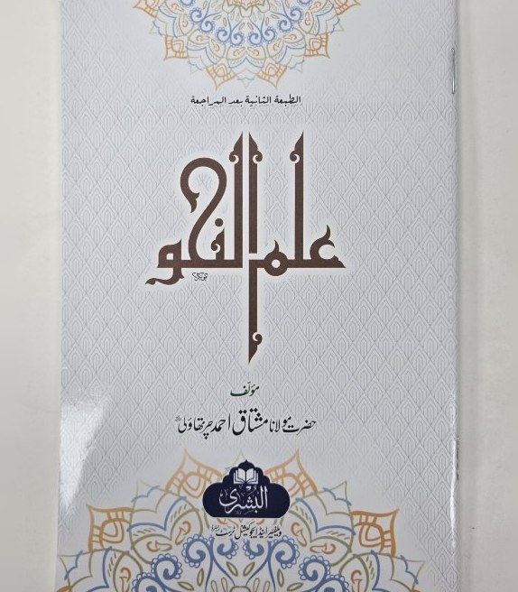
ʿIlm al-NaḥwNahwa · III$5.00 ʿIlm al-Ṣarf (Ākhirīn)Sarf · III$6.00
ʿIlm al-Ṣarf (Ākhirīn)Sarf · III$6.00 Zād al-ṬālibīnHadith · III$5.00
Zād al-ṬālibīnHadith · III$5.00 Jamāl al-QurʾānQira'at Academy editionTajwid · III$3.00
Jamāl al-QurʾānQira'at Academy editionTajwid · III$3.00 Jamāl al-QurʾānWith the Zinat al-Furqan notes, Maktaba RahmaniyyaTajwid · III$3.00
Jamāl al-QurʾānWith the Zinat al-Furqan notes, Maktaba RahmaniyyaTajwid · III$3.00 Riyāḍ al-ṢāliḥīnHadith · IV · V$15.00
Riyāḍ al-ṢāliḥīnHadith · IV · V$15.00 Mukhtaṣar al-QudūrīFiqh · IV$15.00
Mukhtaṣar al-QudūrīFiqh · IV$15.00 ʿIlm al-ṢīghaSarf · IV$5.00
ʿIlm al-ṢīghaSarf · IV$5.00 Hidāyat al-NaḥwNahwa · IV$5.00
Hidāyat al-NaḥwNahwa · IV$5.00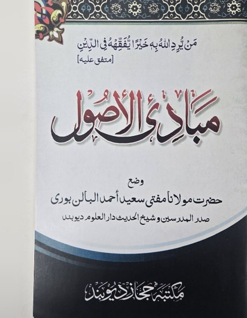
Mabādiʾ al-UṣūlUsul Fiqh · IV$3.00 Al-HidāyaFiqh · V · VI$60.00
Al-HidāyaFiqh · V · VI$60.00 Uṣūl al-ShāshīLight blue coverUsul Fiqh · V$10.00
Uṣūl al-ShāshīLight blue coverUsul Fiqh · V$10.00 Uṣūl al-ShāshīWood-grain coverUsul Fiqh · V$10.00
Uṣūl al-ShāshīWood-grain coverUsul Fiqh · V$10.00 Uṣūl al-ShāshīBrown leather-look coverUsul Fiqh · V$10.00
Uṣūl al-ShāshīBrown leather-look coverUsul Fiqh · V$10.00 Uṣūl al-ShāshīLilac coverUsul Fiqh · V$10.00
Uṣūl al-ShāshīLilac coverUsul Fiqh · V$10.00 Al-Fawāʾid al-MakkiyyaTajwid · V$3.00
Al-Fawāʾid al-MakkiyyaTajwid · V$3.00 Al-Muqaddima al-JazariyyaTajwid · V$3.00
Al-Muqaddima al-JazariyyaTajwid · V$3.00 Khulāṣat al-BayānTajwid · V$5.00
Khulāṣat al-BayānTajwid · V$5.00 Muʿīn al-FarāʾiḍMirath · V$5.00
Muʿīn al-FarāʾiḍMirath · V$5.00![](data:image/svg+xml,%3Csvg%20xmlns%3D%22http%3A%2F%2Fwww.w3.org%2F2000%2Fsvg%22%20viewBox%3D%220%200%20300%20400%22%20width%3D%22300%22%20height%3D%22400%22%3E%3Cdefs%3E%3ClinearGradient%20id%3D%22gv%22%20x1%3D%220%22%20y1%3D%220%22%20x2%3D%220%22%20y2%3D%221%22%3E%3Cstop%20offset%3D%220%22%20stop-color%3D%22%23f7e2a2%22%2F%3E%3Cstop%20offset%3D%22.45%22%20stop-color%3D%22%23d9aa48%22%2F%3E%3Cstop%20offset%3D%22.8%22%20stop-color%3D%22%23a9792a%22%2F%3E%3Cstop%20offset%3D%221%22%20stop-color%3D%22%23e8c778%22%2F%3E%3C%2FlinearGradient%3E%3C%2Fdefs%3E%3Cfilter%20id%3D%22n%22%20x%3D%220%22%20y%3D%220%22%20width%3D%22100%25%22%20height%3D%22100%25%22%3E%3CfeTurbulence%20type%3D%22fractalNoise%22%20baseFrequency%3D%220.9%22%20numOctaves%3D%223%22%20stitchTiles%3D%22stitch%22%2F%3E%3CfeColorMatrix%20values%3D%220%200%200%200%200%20%200%200%200%200%200%20%200%200%200%200%200%20%200.5%200%200%200%20-0.22%22%2F%3E%3C%2Ffilter%3E%3ClinearGradient%20id%3D%22l%22%20x1%3D%220%22%20y1%3D%220%22%20x2%3D%221%22%20y2%3D%220%22%3E%3Cstop%20offset%3D%220%22%20stop-opacity%3D%220.4%22%2F%3E%3Cstop%20offset%3D%220.16%22%20stop-opacity%3D%220.04%22%2F%3E%3Cstop%20offset%3D%220.5%22%20stop-color%3D%22%23fff%22%20stop-opacity%3D%220.07%22%2F%3E%3Cstop%20offset%3D%221%22%20stop-opacity%3D%220.28%22%2F%3E%3C%2FlinearGradient%3E%3Cpattern%20id%3D%22b%22%20width%3D%228%22%20height%3D%2214%22%20patternUnits%3D%22userSpaceOnUse%22%20y%3D%2212%22%3E%3Cpath%20d%3D%22M1.2%200C6.8%203.5%206.8%2010.5%201.2%2014M6.8%200C1.2%203.5%201.2%2010.5%206.8%2014%22%20stroke%3D%22%23d9aa48%22%20stroke-width%3D%221.3%22%20fill%3D%22none%22%2F%3E%3C%2Fpattern%3E%3Crect%20width%3D%22300%22%20height%3D%22400%22%20fill%3D%22%23230d2a%22%2F%3E%3Crect%20x%3D%2212%22%20y%3D%2212%22%20width%3D%22276%22%20height%3D%22376%22%20fill%3D%22none%22%20stroke%3D%22%23d9aa48%22%20stroke-width%3D%221.8%22%2F%3E%3Crect%20x%3D%2217%22%20y%3D%2216%22%20width%3D%228%22%20height%3D%22368%22%20fill%3D%22url%28%23b%29%22%2F%3E%3Crect%20x%3D%22275%22%20y%3D%2216%22%20width%3D%228%22%20height%3D%22368%22%20fill%3D%22url%28%23b%29%22%2F%3E%3Crect%20x%3D%2231%22%20y%3D%2220%22%20width%3D%22238%22%20height%3D%22360%22%20fill%3D%22%23582a66%22%20fill-opacity%3D%22.55%22%20stroke%3D%22%23d9aa48%22%2F%3E%3Cg%20transform%3D%22translate%28150%200%29%20scale%282.2%29%22%3E%3Cline%20x1%3D%220%22%20y1%3D%2212.5%22%20x2%3D%220%22%20y2%3D%2218%22%20stroke%3D%22%23d9aa48%22%20stroke-width%3D%22.8%22%2F%3E%3Ccircle%20cx%3D%220%22%20cy%3D%2214.5%22%20r%3D%221.3%22%20fill%3D%22url%28%23gv%29%22%2F%3E%3Cpath%20d%3D%22M0%2018C7%2024%207%2031%200%2036.5C-7%2031%20-7%2024%200%2018Z%22%20fill%3D%22url%28%23gv%29%22%2F%3E%3Cpath%20d%3D%22M0%2023.5C3.2%2026.5%203.2%2030%200%2032.5C-3.2%2030%20-3.2%2026.5%200%2023.5Z%22%20fill%3D%22%23230d2a%22%2F%3E%3Ccircle%20cx%3D%220%22%20cy%3D%2228.3%22%20r%3D%220.9%22%20fill%3D%22url%28%23gv%29%22%2F%3E%3C%2Fg%3E%3Cpath%20d%3D%22M150%20104%20C162.24%20120.5%20218%20113%20218%20134%20L218%20276%20C218%20297%20162.24%20289.5%20150%20306%20C137.76%20289.5%2082%20297%2082%20276%20L82%20134%20C82%20113%20137.76%20120.5%20150%20104%20Z%22%20fill%3D%22%23230d2a%22%20stroke%3D%22url%28%23gv%29%22%20stroke-width%3D%221.3%22%2F%3E%3Cpath%20d%3D%22M150%20107.6%20C161.77%20123%20215.4%20116%20215.4%20135.6%20L215.4%20274.4%20C215.4%20294%20161.77%20287%20150%20302.4%20C138.23%20287%2084.6%20294%2084.6%20274.4%20L84.6%20135.6%20C84.6%20116%20138.23%20123%20150%20107.6%20Z%22%20fill%3D%22none%22%20stroke%3D%22%23d9aa48%22%20stroke-width%3D%22.55%22%20opacity%3D%22.75%22%2F%3E%3Ccircle%20cx%3D%22150%22%20cy%3D%22101.4%22%20r%3D%221.3%22%20fill%3D%22url%28%23gv%29%22%2F%3E%3Ccircle%20cx%3D%22150%22%20cy%3D%22308.6%22%20r%3D%221.3%22%20fill%3D%22url%28%23gv%29%22%2F%3E%3Cg%20transform%3D%22translate%28150%20326%29%20scale%282.2%29%22%3E%3Cpath%20d%3D%22M0%200L3.5%204L0%208L-3.5%204Z%22%20fill%3D%22url%28%23gv%29%22%2F%3E%3C%2Fg%3E%3Ctext%20x%3D%22150%22%20y%3D%22213.05%22%20text-anchor%3D%22middle%22%20fill%3D%22%23f4dfa2%22%20font-family%3D%22Georgia%2C%20serif%22%20font-size%3D%2223%22%20font-weight%3D%22600%22%3EAl-Sir%C4%81j%C4%AB%3C%2Ftext%3E%3Crect%20width%3D%22300%22%20height%3D%22400%22%20filter%3D%22url%28%23n%29%22%2F%3E%3Crect%20width%3D%22300%22%20height%3D%22400%22%20fill%3D%22url%28%23l%29%22%2F%3E%3C%2Fsvg%3E) Al-SirājīMirath · V$10.00
Al-SirājīMirath · V$10.00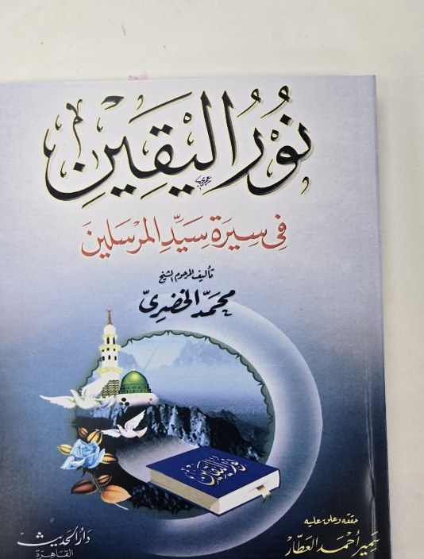
Nūr al-YaqīnSira · V$10.00![](data:image/svg+xml,%3Csvg%20xmlns%3D%22http%3A%2F%2Fwww.w3.org%2F2000%2Fsvg%22%20viewBox%3D%220%200%20300%20400%22%20width%3D%22300%22%20height%3D%22400%22%3E%3Cdefs%3E%3ClinearGradient%20id%3D%22gv%22%20x1%3D%220%22%20y1%3D%220%22%20x2%3D%220%22%20y2%3D%221%22%3E%3Cstop%20offset%3D%220%22%20stop-color%3D%22%23f7e2a2%22%2F%3E%3Cstop%20offset%3D%22.45%22%20stop-color%3D%22%23d9aa48%22%2F%3E%3Cstop%20offset%3D%22.8%22%20stop-color%3D%22%23a9792a%22%2F%3E%3Cstop%20offset%3D%221%22%20stop-color%3D%22%23e8c778%22%2F%3E%3C%2FlinearGradient%3E%3C%2Fdefs%3E%3Cfilter%20id%3D%22n%22%20x%3D%220%22%20y%3D%220%22%20width%3D%22100%25%22%20height%3D%22100%25%22%3E%3CfeTurbulence%20type%3D%22fractalNoise%22%20baseFrequency%3D%220.9%22%20numOctaves%3D%223%22%20stitchTiles%3D%22stitch%22%2F%3E%3CfeColorMatrix%20values%3D%220%200%200%200%200%20%200%200%200%200%200%20%200%200%200%200%200%20%200.5%200%200%200%20-0.22%22%2F%3E%3C%2Ffilter%3E%3ClinearGradient%20id%3D%22l%22%20x1%3D%220%22%20y1%3D%220%22%20x2%3D%221%22%20y2%3D%220%22%3E%3Cstop%20offset%3D%220%22%20stop-opacity%3D%220.4%22%2F%3E%3Cstop%20offset%3D%220.16%22%20stop-opacity%3D%220.04%22%2F%3E%3Cstop%20offset%3D%220.5%22%20stop-color%3D%22%23fff%22%20stop-opacity%3D%220.07%22%2F%3E%3Cstop%20offset%3D%221%22%20stop-opacity%3D%220.28%22%2F%3E%3C%2FlinearGradient%3E%3Cpattern%20id%3D%22b%22%20width%3D%228%22%20height%3D%2214%22%20patternUnits%3D%22userSpaceOnUse%22%20y%3D%2212%22%3E%3Cpath%20d%3D%22M1.2%200C6.8%203.5%206.8%2010.5%201.2%2014M6.8%200C1.2%203.5%201.2%2010.5%206.8%2014%22%20stroke%3D%22%23d9aa48%22%20stroke-width%3D%221.3%22%20fill%3D%22none%22%2F%3E%3C%2Fpattern%3E%3Crect%20width%3D%22300%22%20height%3D%22400%22%20fill%3D%22%231c0b22%22%2F%3E%3Crect%20x%3D%2212%22%20y%3D%2212%22%20width%3D%22276%22%20height%3D%22376%22%20fill%3D%22none%22%20stroke%3D%22%23d9aa48%22%20stroke-width%3D%221.8%22%2F%3E%3Crect%20x%3D%2217%22%20y%3D%2216%22%20width%3D%228%22%20height%3D%22368%22%20fill%3D%22url%28%23b%29%22%2F%3E%3Crect%20x%3D%22275%22%20y%3D%2216%22%20width%3D%228%22%20height%3D%22368%22%20fill%3D%22url%28%23b%29%22%2F%3E%3Crect%20x%3D%2231%22%20y%3D%2220%22%20width%3D%22238%22%20height%3D%22360%22%20fill%3D%22%234b2458%22%20fill-opacity%3D%22.55%22%20stroke%3D%22%23d9aa48%22%2F%3E%3Cg%20transform%3D%22translate%28150%200%29%20scale%282.2%29%22%3E%3Cline%20x1%3D%220%22%20y1%3D%2212.5%22%20x2%3D%220%22%20y2%3D%2218%22%20stroke%3D%22%23d9aa48%22%20stroke-width%3D%22.8%22%2F%3E%3Ccircle%20cx%3D%220%22%20cy%3D%2214.5%22%20r%3D%221.3%22%20fill%3D%22url%28%23gv%29%22%2F%3E%3Cpath%20d%3D%22M0%2018C7%2024%207%2031%200%2036.5C-7%2031%20-7%2024%200%2018Z%22%20fill%3D%22url%28%23gv%29%22%2F%3E%3Cpath%20d%3D%22M0%2023.5C3.2%2026.5%203.2%2030%200%2032.5C-3.2%2030%20-3.2%2026.5%200%2023.5Z%22%20fill%3D%22%231c0b22%22%2F%3E%3Ccircle%20cx%3D%220%22%20cy%3D%2228.3%22%20r%3D%220.9%22%20fill%3D%22url%28%23gv%29%22%2F%3E%3C%2Fg%3E%3Cpath%20d%3D%22M150%20104%20C162.24%20120.5%20218%20113%20218%20134%20L218%20276%20C218%20297%20162.24%20289.5%20150%20306%20C137.76%20289.5%2082%20297%2082%20276%20L82%20134%20C82%20113%20137.76%20120.5%20150%20104%20Z%22%20fill%3D%22%231c0b22%22%20stroke%3D%22url%28%23gv%29%22%20stroke-width%3D%221.3%22%2F%3E%3Cpath%20d%3D%22M150%20107.6%20C161.77%20123%20215.4%20116%20215.4%20135.6%20L215.4%20274.4%20C215.4%20294%20161.77%20287%20150%20302.4%20C138.23%20287%2084.6%20294%2084.6%20274.4%20L84.6%20135.6%20C84.6%20116%20138.23%20123%20150%20107.6%20Z%22%20fill%3D%22none%22%20stroke%3D%22%23d9aa48%22%20stroke-width%3D%22.55%22%20opacity%3D%22.75%22%2F%3E%3Ccircle%20cx%3D%22150%22%20cy%3D%22101.4%22%20r%3D%221.3%22%20fill%3D%22url%28%23gv%29%22%2F%3E%3Ccircle%20cx%3D%22150%22%20cy%3D%22308.6%22%20r%3D%221.3%22%20fill%3D%22url%28%23gv%29%22%2F%3E%3Cg%20transform%3D%22translate%28150%20326%29%20scale%282.2%29%22%3E%3Cpath%20d%3D%22M0%200L3.5%204L0%208L-3.5%204Z%22%20fill%3D%22url%28%23gv%29%22%2F%3E%3C%2Fg%3E%3Ctext%20x%3D%22150%22%20y%3D%22199.05%22%20text-anchor%3D%22middle%22%20fill%3D%22%23f4dfa2%22%20font-family%3D%22Georgia%2C%20serif%22%20font-size%3D%2223%22%20font-weight%3D%22600%22%3ENaf%E1%B8%A5at%3C%2Ftext%3E%3Ctext%20x%3D%22150%22%20y%3D%22227.05%22%20text-anchor%3D%22middle%22%20fill%3D%22%23f4dfa2%22%20font-family%3D%22Georgia%2C%20serif%22%20font-size%3D%2223%22%20font-weight%3D%22600%22%3Eal-%CA%BFArab%3C%2Ftext%3E%3Crect%20width%3D%22300%22%20height%3D%22400%22%20filter%3D%22url%28%23n%29%22%2F%3E%3Crect%20width%3D%22300%22%20height%3D%22400%22%20fill%3D%22url%28%23l%29%22%2F%3E%3C%2Fsvg%3E) Nafḥat al-ʿArabAdab · V$15.00
Nafḥat al-ʿArabAdab · V$15.00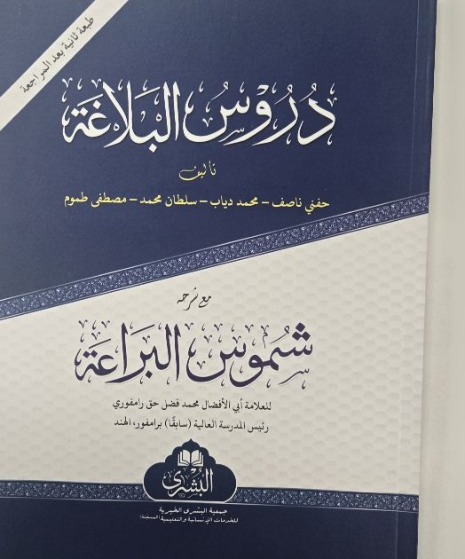
Durūs al-BalāghaBlue and white coverBalagha · V$7.00 Durūs al-BalāghaBlue and cream coverBalagha · V$7.00
Durūs al-BalāghaBlue and cream coverBalagha · V$7.00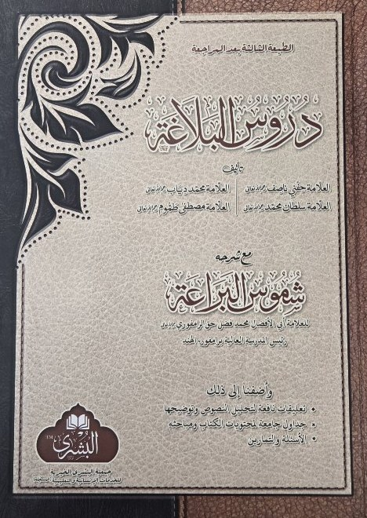
Durūs al-BalāghaLeather-look coverBalagha · V$7.00 Mishkāt al-MaṣābīḥBlack and gold, Ashrafi Book DepotHadith · VI$30.00
Mishkāt al-MaṣābīḥBlack and gold, Ashrafi Book DepotHadith · VI$30.00 Mishkāt al-MaṣābīḥNavy cover, al-BushraHadith · VI$30.00
Mishkāt al-MaṣābīḥNavy cover, al-BushraHadith · VI$30.00 Mishkāt al-MaṣābīḥBrown cover, al-BushraHadith · VI$30.00
Mishkāt al-MaṣābīḥBrown cover, al-BushraHadith · VI$30.00 Tafsīr al-JalālaynDark leather-look coverTafseer · VI$35.00
Tafsīr al-JalālaynDark leather-look coverTafseer · VI$35.00 Tafsīr al-JalālaynGrey coverTafseer · VI$35.00
Tafsīr al-JalālaynGrey coverTafseer · VI$35.00 Sharḥ al-ʿAqīda al-ṬaḥāwiyyaAqidah · VI$10.00
Sharḥ al-ʿAqīda al-ṬaḥāwiyyaAqidah · VI$10.00 Al-Fawz al-KabīrPaperbackUsul Tafsir · VI$5.00
Al-Fawz al-KabīrPaperbackUsul Tafsir · VI$5.00 Al-Fawz al-KabīrHardcoverUsul Tafsir · VI$5.00
Al-Fawz al-KabīrHardcoverUsul Tafsir · VI$5.00 Taysīr Muṣṭalaḥ al-ḤadīthUsul Hadith · VI$10.00
Taysīr Muṣṭalaḥ al-ḤadīthUsul Hadith · VI$10.00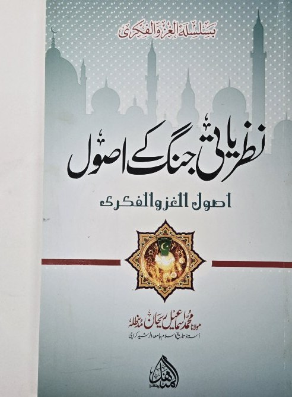
Ghazv-i FikrīFikr · VI$7.00 Ṣaḥīḥ al-BukhārīBrown coverHadith · VII$60.00
Ṣaḥīḥ al-BukhārīBrown coverHadith · VII$60.00 Ṣaḥīḥ al-BukhārīGreen coverHadith · VII$60.00
Ṣaḥīḥ al-BukhārīGreen coverHadith · VII$60.00 Ṣaḥīḥ MuslimGreen coverHadith · VII$50.00
Ṣaḥīḥ MuslimGreen coverHadith · VII$50.00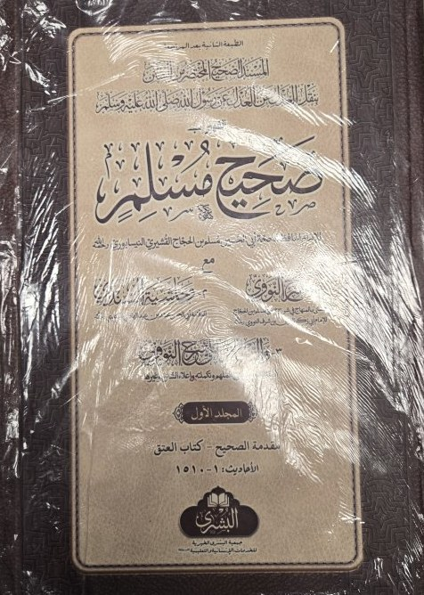
Ṣaḥīḥ MuslimBrown coverHadith · VII$50.00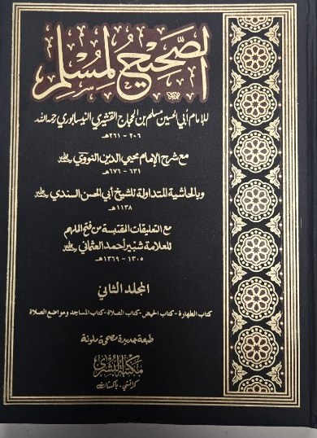
Ṣaḥīḥ MuslimBlack coverHadith · VII$50.00 Sunan Abī DāwūdGrey coverHadith · VII$40.00
Sunan Abī DāwūdGrey coverHadith · VII$40.00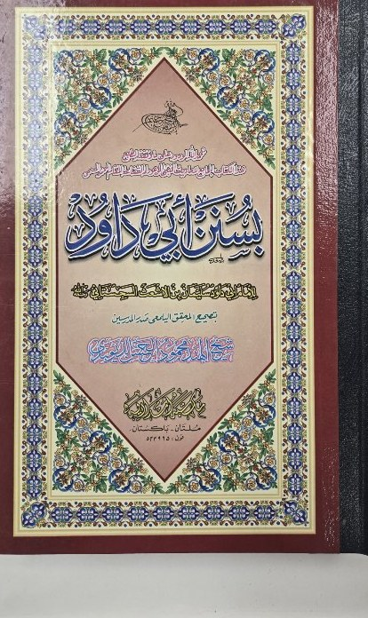
Sunan Abī DāwūdRed and gold coverHadith · VII$40.00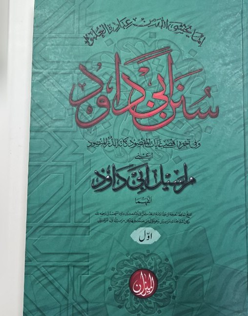
Sunan Abī DāwūdGreen coverHadith · VII$40.00 Sunan Ibn MājaBlue coverHadith · VII$35.00
Sunan Ibn MājaBlue coverHadith · VII$35.00 Sunan Ibn MājaPink coverHadith · VII$35.00
Sunan Ibn MājaPink coverHadith · VII$35.00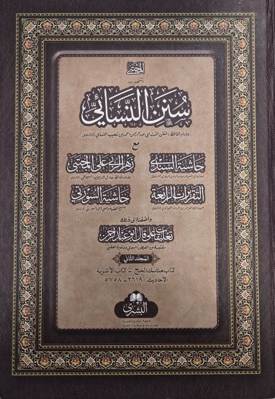
Sunan al-NasāʾīHadith · VII$40.00![](data:image/svg+xml,%3Csvg%20xmlns%3D%22http%3A%2F%2Fwww.w3.org%2F2000%2Fsvg%22%20viewBox%3D%220%200%20300%20400%22%20width%3D%22300%22%20height%3D%22400%22%3E%3Cdefs%3E%3ClinearGradient%20id%3D%22gv%22%20x1%3D%220%22%20y1%3D%220%22%20x2%3D%220%22%20y2%3D%221%22%3E%3Cstop%20offset%3D%220%22%20stop-color%3D%22%23f7e2a2%22%2F%3E%3Cstop%20offset%3D%22.45%22%20stop-color%3D%22%23d9aa48%22%2F%3E%3Cstop%20offset%3D%22.8%22%20stop-color%3D%22%23a9792a%22%2F%3E%3Cstop%20offset%3D%221%22%20stop-color%3D%22%23e8c778%22%2F%3E%3C%2FlinearGradient%3E%3C%2Fdefs%3E%3Cfilter%20id%3D%22n%22%20x%3D%220%22%20y%3D%220%22%20width%3D%22100%25%22%20height%3D%22100%25%22%3E%3CfeTurbulence%20type%3D%22fractalNoise%22%20baseFrequency%3D%220.9%22%20numOctaves%3D%223%22%20stitchTiles%3D%22stitch%22%2F%3E%3CfeColorMatrix%20values%3D%220%200%200%200%200%20%200%200%200%200%200%20%200%200%200%200%200%20%200.5%200%200%200%20-0.22%22%2F%3E%3C%2Ffilter%3E%3ClinearGradient%20id%3D%22l%22%20x1%3D%220%22%20y1%3D%220%22%20x2%3D%221%22%20y2%3D%220%22%3E%3Cstop%20offset%3D%220%22%20stop-opacity%3D%220.4%22%2F%3E%3Cstop%20offset%3D%220.16%22%20stop-opacity%3D%220.04%22%2F%3E%3Cstop%20offset%3D%220.5%22%20stop-color%3D%22%23fff%22%20stop-opacity%3D%220.07%22%2F%3E%3Cstop%20offset%3D%221%22%20stop-opacity%3D%220.28%22%2F%3E%3C%2FlinearGradient%3E%3Cpattern%20id%3D%22b%22%20width%3D%228%22%20height%3D%2214%22%20patternUnits%3D%22userSpaceOnUse%22%20y%3D%2212%22%3E%3Cpath%20d%3D%22M1.2%200C6.8%203.5%206.8%2010.5%201.2%2014M6.8%200C1.2%203.5%201.2%2010.5%206.8%2014%22%20stroke%3D%22%23d9aa48%22%20stroke-width%3D%221.3%22%20fill%3D%22none%22%2F%3E%3C%2Fpattern%3E%3Crect%20width%3D%22300%22%20height%3D%22400%22%20fill%3D%22%2304222a%22%2F%3E%3Crect%20x%3D%2212%22%20y%3D%2212%22%20width%3D%22276%22%20height%3D%22376%22%20fill%3D%22none%22%20stroke%3D%22%23d9aa48%22%20stroke-width%3D%221.8%22%2F%3E%3Crect%20x%3D%2217%22%20y%3D%2216%22%20width%3D%228%22%20height%3D%22368%22%20fill%3D%22url%28%23b%29%22%2F%3E%3Crect%20x%3D%22275%22%20y%3D%2216%22%20width%3D%228%22%20height%3D%22368%22%20fill%3D%22url%28%23b%29%22%2F%3E%3Crect%20x%3D%2231%22%20y%3D%2220%22%20width%3D%22238%22%20height%3D%22360%22%20fill%3D%22%23136170%22%20fill-opacity%3D%22.55%22%20stroke%3D%22%23d9aa48%22%2F%3E%3Cg%20transform%3D%22translate%28150%200%29%20scale%282.2%29%22%3E%3Cline%20x1%3D%220%22%20y1%3D%2212.5%22%20x2%3D%220%22%20y2%3D%2218%22%20stroke%3D%22%23d9aa48%22%20stroke-width%3D%22.8%22%2F%3E%3Ccircle%20cx%3D%220%22%20cy%3D%2214.5%22%20r%3D%221.3%22%20fill%3D%22url%28%23gv%29%22%2F%3E%3Cpath%20d%3D%22M0%2018C7%2024%207%2031%200%2036.5C-7%2031%20-7%2024%200%2018Z%22%20fill%3D%22url%28%23gv%29%22%2F%3E%3Cpath%20d%3D%22M0%2023.5C3.2%2026.5%203.2%2030%200%2032.5C-3.2%2030%20-3.2%2026.5%200%2023.5Z%22%20fill%3D%22%2304222a%22%2F%3E%3Ccircle%20cx%3D%220%22%20cy%3D%2228.3%22%20r%3D%220.9%22%20fill%3D%22url%28%23gv%29%22%2F%3E%3C%2Fg%3E%3Cpath%20d%3D%22M150%20104%20C162.24%20120.5%20218%20113%20218%20134%20L218%20276%20C218%20297%20162.24%20289.5%20150%20306%20C137.76%20289.5%2082%20297%2082%20276%20L82%20134%20C82%20113%20137.76%20120.5%20150%20104%20Z%22%20fill%3D%22%2304222a%22%20stroke%3D%22url%28%23gv%29%22%20stroke-width%3D%221.3%22%2F%3E%3Cpath%20d%3D%22M150%20107.6%20C161.77%20123%20215.4%20116%20215.4%20135.6%20L215.4%20274.4%20C215.4%20294%20161.77%20287%20150%20302.4%20C138.23%20287%2084.6%20294%2084.6%20274.4%20L84.6%20135.6%20C84.6%20116%20138.23%20123%20150%20107.6%20Z%22%20fill%3D%22none%22%20stroke%3D%22%23d9aa48%22%20stroke-width%3D%22.55%22%20opacity%3D%22.75%22%2F%3E%3Ccircle%20cx%3D%22150%22%20cy%3D%22101.4%22%20r%3D%221.3%22%20fill%3D%22url%28%23gv%29%22%2F%3E%3Ccircle%20cx%3D%22150%22%20cy%3D%22308.6%22%20r%3D%221.3%22%20fill%3D%22url%28%23gv%29%22%2F%3E%3Cg%20transform%3D%22translate%28150%20326%29%20scale%282.2%29%22%3E%3Cpath%20d%3D%22M0%200L3.5%204L0%208L-3.5%204Z%22%20fill%3D%22url%28%23gv%29%22%2F%3E%3C%2Fg%3E%3Ctext%20x%3D%22150%22%20y%3D%22199.05%22%20text-anchor%3D%22middle%22%20fill%3D%22%23f4dfa2%22%20font-family%3D%22Georgia%2C%20serif%22%20font-size%3D%2223%22%20font-weight%3D%22600%22%3EJ%C4%81mi%CA%BF%3C%2Ftext%3E%3Ctext%20x%3D%22150%22%20y%3D%22227.05%22%20text-anchor%3D%22middle%22%20fill%3D%22%23f4dfa2%22%20font-family%3D%22Georgia%2C%20serif%22%20font-size%3D%2223%22%20font-weight%3D%22600%22%3Eal-Tirmidh%C4%AB%3C%2Ftext%3E%3Crect%20width%3D%22300%22%20height%3D%22400%22%20filter%3D%22url%28%23n%29%22%2F%3E%3Crect%20width%3D%22300%22%20height%3D%22400%22%20fill%3D%22url%28%23l%29%22%2F%3E%3C%2Fsvg%3E) Jāmiʿ al-TirmidhīHadith · VII$45.00
Jāmiʿ al-TirmidhīHadith · VII$45.00 Sharḥ Maʿānī al-ĀthārBlack cover, al-BushraUsul Hadith · VII$25.00
Sharḥ Maʿānī al-ĀthārBlack cover, al-BushraUsul Hadith · VII$25.00 Sharḥ Maʿānī al-ĀthārBlack and gold, Ashrafi Book DepotUsul Hadith · VII$25.00
Sharḥ Maʿānī al-ĀthārBlack and gold, Ashrafi Book DepotUsul Hadith · VII$25.00![](data:image/svg+xml,%3Csvg%20xmlns%3D%22http%3A%2F%2Fwww.w3.org%2F2000%2Fsvg%22%20viewBox%3D%220%200%20300%20400%22%20width%3D%22300%22%20height%3D%22400%22%3E%3Cdefs%3E%3ClinearGradient%20id%3D%22gv%22%20x1%3D%220%22%20y1%3D%220%22%20x2%3D%220%22%20y2%3D%221%22%3E%3Cstop%20offset%3D%220%22%20stop-color%3D%22%23f7e2a2%22%2F%3E%3Cstop%20offset%3D%22.45%22%20stop-color%3D%22%23d9aa48%22%2F%3E%3Cstop%20offset%3D%22.8%22%20stop-color%3D%22%23a9792a%22%2F%3E%3Cstop%20offset%3D%221%22%20stop-color%3D%22%23e8c778%22%2F%3E%3C%2FlinearGradient%3E%3C%2Fdefs%3E%3Cfilter%20id%3D%22n%22%20x%3D%220%22%20y%3D%220%22%20width%3D%22100%25%22%20height%3D%22100%25%22%3E%3CfeTurbulence%20type%3D%22fractalNoise%22%20baseFrequency%3D%220.9%22%20numOctaves%3D%223%22%20stitchTiles%3D%22stitch%22%2F%3E%3CfeColorMatrix%20values%3D%220%200%200%200%200%20%200%200%200%200%200%20%200%200%200%200%200%20%200.5%200%200%200%20-0.22%22%2F%3E%3C%2Ffilter%3E%3ClinearGradient%20id%3D%22l%22%20x1%3D%220%22%20y1%3D%220%22%20x2%3D%221%22%20y2%3D%220%22%3E%3Cstop%20offset%3D%220%22%20stop-opacity%3D%220.4%22%2F%3E%3Cstop%20offset%3D%220.16%22%20stop-opacity%3D%220.04%22%2F%3E%3Cstop%20offset%3D%220.5%22%20stop-color%3D%22%23fff%22%20stop-opacity%3D%220.07%22%2F%3E%3Cstop%20offset%3D%221%22%20stop-opacity%3D%220.28%22%2F%3E%3C%2FlinearGradient%3E%3Cpattern%20id%3D%22b%22%20width%3D%228%22%20height%3D%2214%22%20patternUnits%3D%22userSpaceOnUse%22%20y%3D%2212%22%3E%3Cpath%20d%3D%22M1.2%200C6.8%203.5%206.8%2010.5%201.2%2014M6.8%200C1.2%203.5%201.2%2010.5%206.8%2014%22%20stroke%3D%22%23d9aa48%22%20stroke-width%3D%221.3%22%20fill%3D%22none%22%2F%3E%3C%2Fpattern%3E%3Crect%20width%3D%22300%22%20height%3D%22400%22%20fill%3D%22%2304222a%22%2F%3E%3Crect%20x%3D%2212%22%20y%3D%2212%22%20width%3D%22276%22%20height%3D%22376%22%20fill%3D%22none%22%20stroke%3D%22%23d9aa48%22%20stroke-width%3D%221.8%22%2F%3E%3Crect%20x%3D%2217%22%20y%3D%2216%22%20width%3D%228%22%20height%3D%22368%22%20fill%3D%22url%28%23b%29%22%2F%3E%3Crect%20x%3D%22275%22%20y%3D%2216%22%20width%3D%228%22%20height%3D%22368%22%20fill%3D%22url%28%23b%29%22%2F%3E%3Crect%20x%3D%2231%22%20y%3D%2220%22%20width%3D%22238%22%20height%3D%22360%22%20fill%3D%22%23136170%22%20fill-opacity%3D%22.55%22%20stroke%3D%22%23d9aa48%22%2F%3E%3Cg%20transform%3D%22translate%28150%200%29%20scale%282.2%29%22%3E%3Cline%20x1%3D%220%22%20y1%3D%2212.5%22%20x2%3D%220%22%20y2%3D%2218%22%20stroke%3D%22%23d9aa48%22%20stroke-width%3D%22.8%22%2F%3E%3Ccircle%20cx%3D%220%22%20cy%3D%2214.5%22%20r%3D%221.3%22%20fill%3D%22url%28%23gv%29%22%2F%3E%3Cpath%20d%3D%22M0%2018C7%2024%207%2031%200%2036.5C-7%2031%20-7%2024%200%2018Z%22%20fill%3D%22url%28%23gv%29%22%2F%3E%3Cpath%20d%3D%22M0%2023.5C3.2%2026.5%203.2%2030%200%2032.5C-3.2%2030%20-3.2%2026.5%200%2023.5Z%22%20fill%3D%22%2304222a%22%2F%3E%3Ccircle%20cx%3D%220%22%20cy%3D%2228.3%22%20r%3D%220.9%22%20fill%3D%22url%28%23gv%29%22%2F%3E%3C%2Fg%3E%3Cpath%20d%3D%22M150%20104%20C162.24%20120.5%20218%20113%20218%20134%20L218%20276%20C218%20297%20162.24%20289.5%20150%20306%20C137.76%20289.5%2082%20297%2082%20276%20L82%20134%20C82%20113%20137.76%20120.5%20150%20104%20Z%22%20fill%3D%22%2304222a%22%20stroke%3D%22url%28%23gv%29%22%20stroke-width%3D%221.3%22%2F%3E%3Cpath%20d%3D%22M150%20107.6%20C161.77%20123%20215.4%20116%20215.4%20135.6%20L215.4%20274.4%20C215.4%20294%20161.77%20287%20150%20302.4%20C138.23%20287%2084.6%20294%2084.6%20274.4%20L84.6%20135.6%20C84.6%20116%20138.23%20123%20150%20107.6%20Z%22%20fill%3D%22none%22%20stroke%3D%22%23d9aa48%22%20stroke-width%3D%22.55%22%20opacity%3D%22.75%22%2F%3E%3Ccircle%20cx%3D%22150%22%20cy%3D%22101.4%22%20r%3D%221.3%22%20fill%3D%22url%28%23gv%29%22%2F%3E%3Ccircle%20cx%3D%22150%22%20cy%3D%22308.6%22%20r%3D%221.3%22%20fill%3D%22url%28%23gv%29%22%2F%3E%3Cg%20transform%3D%22translate%28150%20326%29%20scale%282.2%29%22%3E%3Cpath%20d%3D%22M0%200L3.5%204L0%208L-3.5%204Z%22%20fill%3D%22url%28%23gv%29%22%2F%3E%3C%2Fg%3E%3Ctext%20x%3D%22150%22%20y%3D%22187%22%20text-anchor%3D%22middle%22%20fill%3D%22%23f4dfa2%22%20font-family%3D%22Georgia%2C%20serif%22%20font-size%3D%2220%22%20font-weight%3D%22600%22%3EMuwa%E1%B9%AD%E1%B9%ADa%CA%BE%3C%2Ftext%3E%3Ctext%20x%3D%22150%22%20y%3D%22212%22%20text-anchor%3D%22middle%22%20fill%3D%22%23f4dfa2%22%20font-family%3D%22Georgia%2C%20serif%22%20font-size%3D%2220%22%20font-weight%3D%22600%22%3Eal-Im%C4%81m%3C%2Ftext%3E%3Ctext%20x%3D%22150%22%20y%3D%22237%22%20text-anchor%3D%22middle%22%20fill%3D%22%23f4dfa2%22%20font-family%3D%22Georgia%2C%20serif%22%20font-size%3D%2220%22%20font-weight%3D%22600%22%3EM%C4%81lik%3C%2Ftext%3E%3Crect%20width%3D%22300%22%20height%3D%22400%22%20filter%3D%22url%28%23n%29%22%2F%3E%3Crect%20width%3D%22300%22%20height%3D%22400%22%20fill%3D%22url%28%23l%29%22%2F%3E%3C%2Fsvg%3E) Muwaṭṭaʾ al-Imām MālikHadith · VII$25.00
Muwaṭṭaʾ al-Imām MālikHadith · VII$25.00 Muwaṭṭaʾ al-Imām MuḥammadHadith · VII$25.00
Muwaṭṭaʾ al-Imām MuḥammadHadith · VII$25.00 Nūr al-ĪḍāḥFiqh · VII$12.00
Nūr al-ĪḍāḥFiqh · VII$12.00